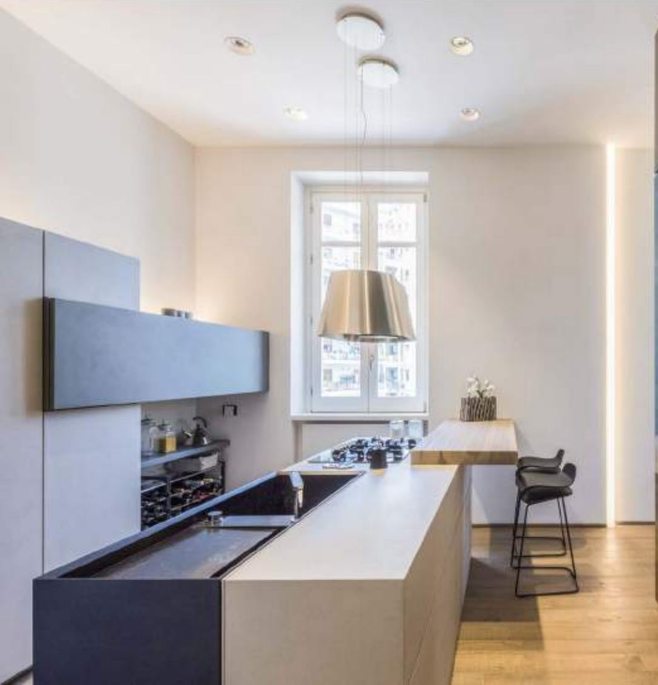
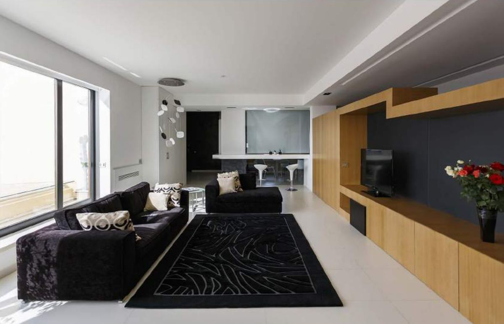
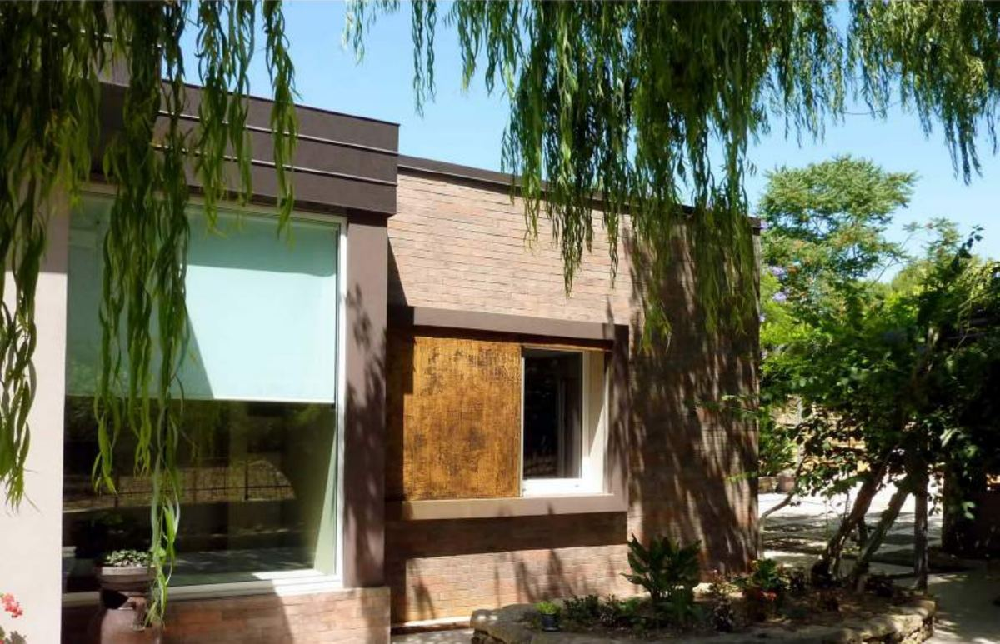

Progetti di Studio 4e: architettura e interni a Palermo e in Sicilia
Una selezione di progetti realizzati da Studio 4e, lo studio di architettura fondato a Palermo dagli architetti Fabio Costanzo e Maria Rosaria Piazza: ristrutturazioni di appartamenti, ville con giardino, ristoranti, cantine e showroom.
Appartamento privato · Sicilia · 2018 · Realizzato
Ristrutturazione di un appartamento con soffitti decorati d'epoca: le decorazioni originali restano protagoniste, mentre librerie su misura, cucina a isola e illuminazione contemporanea ridisegnano gli spazi.
Servizi: Concept, architettura, interior design

SD House
Appartamento privato · Sicilia · 2016 · Realizzato
Nuova distribuzione interna con cucina a isola, boiserie in legno, bagno su misura e tagli di luce integrati nelle pareti.
Servizi: Concept, architettura, interior design

Loft in Sicily
Appartamento privato · Sicilia · 2011 · Realizzato
Trasformazione di un appartamento in loft open space: zona giorno continua, arredi su misura in legno e superfici neutre.
Servizi: Concept, architettura, interior design

Ascanio House
Villa privata · Sicilia · 2012 · Realizzato
Ristrutturazione di una villa con giardino e piscina: nuove aperture verso l'esterno, rivestimenti in mattone e interni rinnovati.
I progetti di Studio 4e sono stati pubblicati su riviste e portali di architettura e design, tra cui Ville & Casali, Area, Showroom, Rifare Casa, ddB e Balarm. Nel 2026 lo studio è stato incluso da Archie Interiors tra i migliori studi di architettura a Palermo.
Hai un progetto a Palermo?
Raccontaci immobile, zona e obiettivi: ti proponiamo un primo sopralluogo e una stima di costi e tempi.